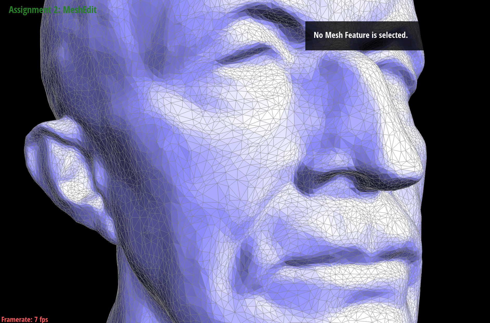
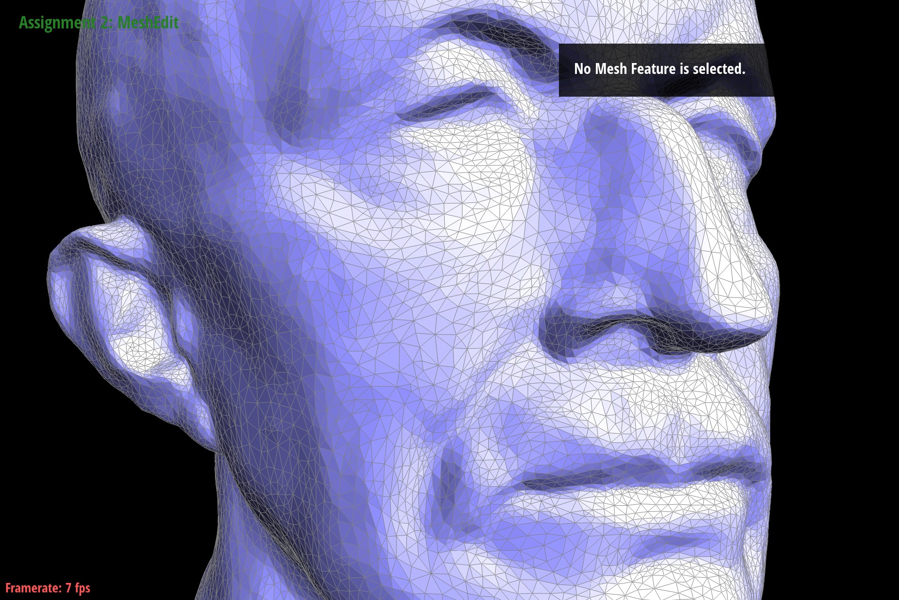
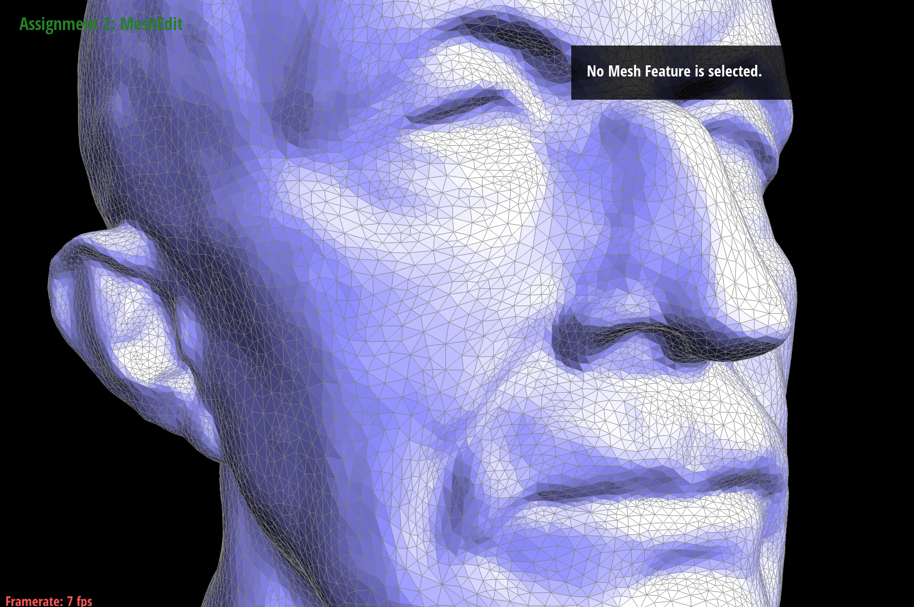
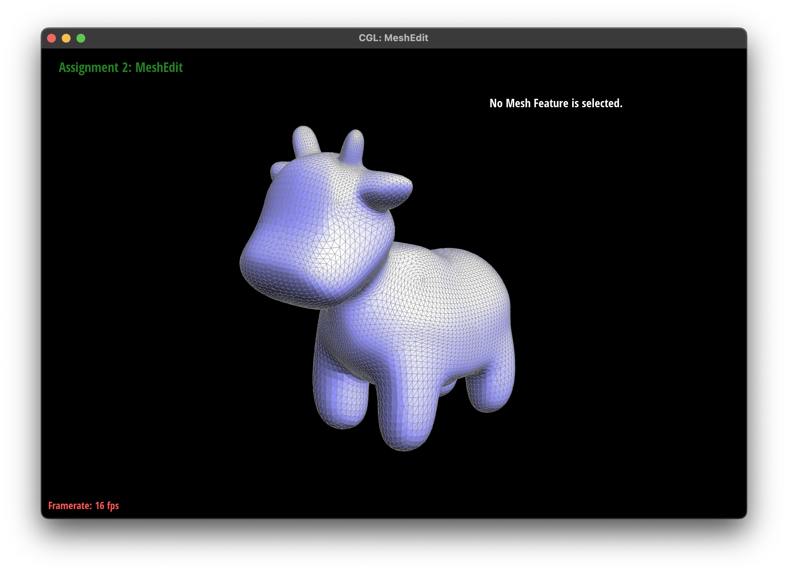
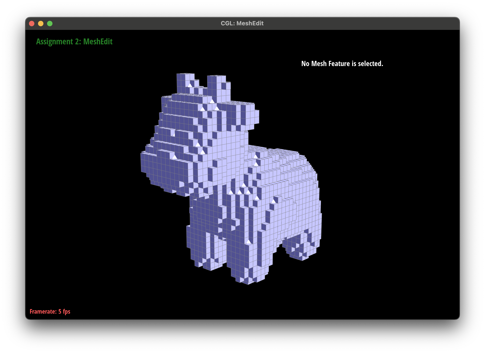

Polygone
CS184 Final Project Milestone
Names: Christopher Hoang, Walter Wu, Michael Setchko Palmerlee, Darren Shen
Link to Website:
https://michael-wsp.github.io/polygone-webpage/
Link to Milestone Slides:
https://docs.google.com/presentation/d/1P7KPHY6OwA6z_1yU1DDkJwnzC3LusMq9tifQTqV5SCM/edit?usp=sharing
Link to Milestone Video:
https://youtu.be/Y8r5TAHOQUI?feature=shared
Milestone Progress
So far, we have implemented several mesh operations that will be used for various
remeshing techniques, including vertex shift, fill missing faces, remove degenerate
triangles, and edge collapse. We started our project from homework 2, where we
had implemented edge flip and edge split. These additional operations will be
crucial for remeshing and repairing
malformed meshes. We also have implemented 2 remeshing algorithms so far:
Incremental remeshing and Pixellate remeshing.
Mesh Operations
Vertex shift helps to regularize meshes by moving
vertices towards the average of their neighbors. Specifically, a correction
vector is created between a vertex and the average of its neighbors, scaled
by a factor of lambda between 0 and 1, and finally applied to the original
position of the vertex. This algorithm can also be used in succession.
Below is an example of 0, 1, and 5 iterations of this vertex shift algorithm.
|

0 iterations
|

1 iteration
|

5 iterations
|
As mentioned above, we also added a function which will scan a mesh and attempt to fill any missing
faces, assuming the mesh is intended to be airtight. Next, we implemented a
function that will fix a degenerate face on a mesh (a face with 0 area) by
removing the face and adjusting any adjacent geometry. This function makes
use of the edge collapse operation with a special case for updating vertex
positions. This will be useful for handling poorly formed meshes with our
remeshing operations.
Remeshing Algorithms
We have added implementations of Incremental remeshing, which is an isotropic
remeshing algorithm, meaning it is applied equally at all areas of the mesh.
We also made a preliminary implementation of a
pixellate remesher, which turns an existing mesh into a pixellated version
which appears to be made up of small cubes. An example of the pixellation remesh
algorithm is shown below, and another example can be found in our video.
|

Cow
|

Pixellated cow
|
Both of these algorithms are functional, but need additional debugging and optimization.
The pixellate function is inefficient right now, and also generates some unnecessary
geometry. Moving forward, our first goal will to make sure both of these operations
are fully functional and optimized. Then, we hope to update the pixellate remesher
to allow for real time modification of the voxel size as well as real time updates
to modifications of the underlying mesh. We will also be adding more remeshing algorithms,
starting with quadric error mesh simplification. We would also like
to implement an adaptive remeshing algorithm, which changes how it remeshes different
parts of a surface based on the curvature and complexity of the mesh in that area.
If we have time, we will look into more real-time remeshing algorithms that could
be useful with creating realistic looking deformations in animation. We have
kept up with our planned progress so far, and are looking forward to adding
more functionality.